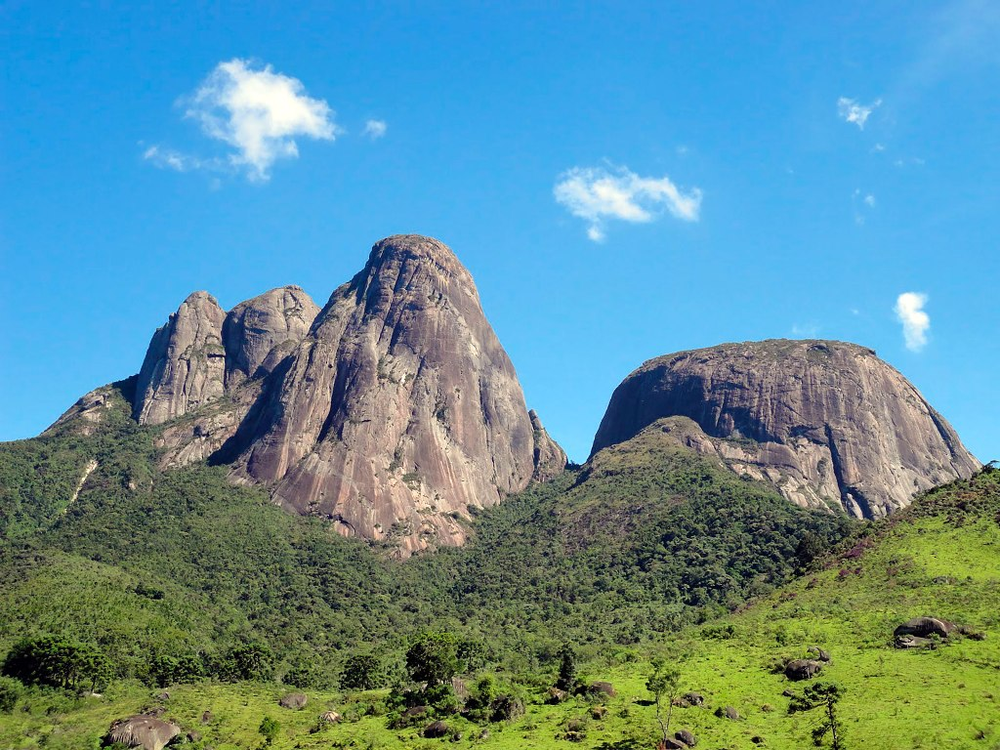

Localizado na Região Serrana do estado do Rio de Janeiro, o Parque Estadual dos Três Picos (PETP) é a maior unidade de conservação ambiental sob gestão estadual no Rio de Janeiro, com cerca de 65 mil hectares. Criado em 2002, o parque abrange os municípios de Cachoeiras de Macacu, Nova Friburgo, Teresópolis, Guapimirim e Silva Jardim. Seu nome vem do conjunto montanhoso mais icônico do parque: os Três Picos, situados em Nova Friburgo, cujas elevações ultrapassam os 2.300 metros de altitude, sendo o Pico Maior de Friburgo o mais alto com 2.366 metros.
O parque abriga formações rochosas imponentes, florestas densas, campos de altitude e nascentes que abastecem importantes rios da região. É lar de uma rica biodiversidade típica da Mata Atlântica, com espécies ameaçadas de extinção como o muriqui-do-sul, a onça-parda e aves raras como o gavião-pato. A flora também é extremamente diversa, com bromélias, orquídeas e árvores centenárias. É um destino muito procurado por trilheiros, escaladores e amantes da natureza, oferecendo paisagens deslumbrantes, trilhas de diferentes níveis, cachoeiras, mirantes naturais e áreas ideais para observação de fauna e flora.
O parque também tem papel fundamental na conservação ambiental, na proteção dos recursos hídricos e na regulação do clima local. Sua gestão é feita pelo Instituto Estadual do Ambiente (INEA), que atua na conservação, pesquisa científica e incentivo ao turismo sustentável. A visitação é gratuita, e os visitantes são incentivados a seguir práticas de mínimo impacto e respeito à natureza.